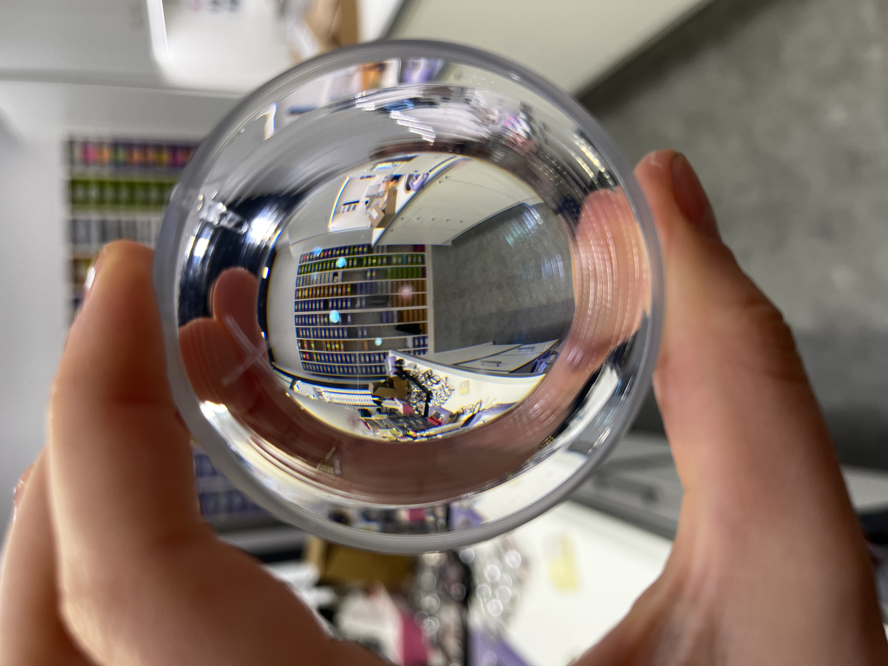
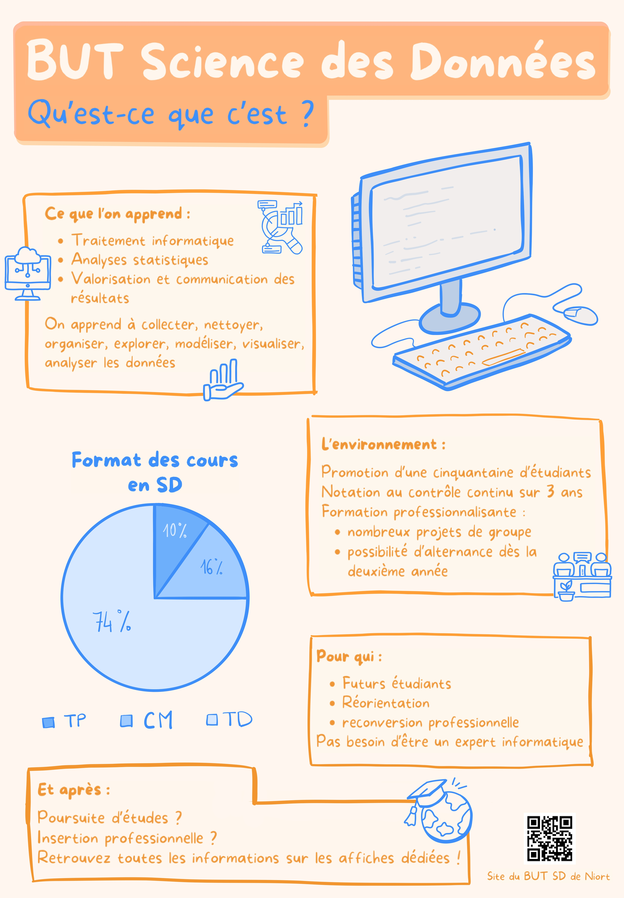

Bienvenue sur mon portfolio, je suis étudiante en BUT Science des Données à l'université de Poitiers. Ici vous trouverez mes projets, mon parcours et les moyens de me contacter.
Après avoir obtenu mon baccalauréat série Scientifique spécialité SVT en 2020, je me suis dirigée vers la faculté de Biologie à l'université de Poitiers. Ce parcours n'étant pas fait pour moi, je me suis orientée l'année suivante vers un BTS Opticien Lunetier. J'ai eu la chance de pouvoir réaliser mes deux années de BTS en apprentissage, où j'ai pu apprendre le métier d'opticien directement auprès de professionnels de la santé. À la suite de ce diplôme, j'ai obtenu une licence professionnelle d'optique, réalisée en un an également en apprentissage, afin de me spécialiser dans les examens de la vue et l'adaptation en lentilles de contact. Ces trois années d'apprentissage se sont déroulées dans le même magasin Optic 2000, où j'ai appris à travailler en équipe, à communiquer et à être à l'écoute des besoins de nos patients afin de devenir autonome. Par la suite, j'ai décidé d'intégrer le monde professionnel. Afin de découvrir une nouvelle méthode de travail et une nouvelle patientèle, j'ai changé de magasin pour travailler chez un indépendant dans les vignobles nantais. Lors de cette année, j'ai pris conscience que je ne me voyais pas travailler sur le long terme dans ce domaine. J'ai alors décidé de me renseigner afin d'envisager une réorientation. C'est ainsi que je suis aujourd'hui en BUT Science des Données.

Il est effectivement surprenant de passer d'opticienne à future spécialiste de la donnée.
Ce choix s'est fait en plusieurs étapes. Premièrement, j'ai commencé à m'interroger durant mon année de Licence Professionnelle. Je sentais que quelque chose ne me convenait pas lorsque j'étais en magasin. C'est également pour cette raison que j'ai décidé de travailler chez un indépendant. Je suis alors passée d'une équipe de sept personnes à une structure composée de mon responsable, d'un apprenti et de moi-même.
Malgré ce changement, et même après m'être adaptée à mon nouvel environnement de travail, j'ai pris conscience que je ne me voyais pas exercer ce métier sur le long terme.
J'ai alors entrepris des recherches afin de m'orienter vers un autre métier. Le domaine de l'optique me plaisait, mais les différentes possibilités qu'offraient mes études me semblaient limitées. J'ai donc commencé à m'intéresser à une éventuelle reprise d'études.
L'informatique a commencé à m'intéresser à la suite d'échanges avec des proches travaillant dans ce domaine. J'ai effectué des recherches et me suis rendu compte que ce secteur répondait à un certain nombre de mes attentes : esprit scientifique, technicité, logique et résolution de problèmes.
Connaissant déjà l'existence du BUT Science des Données (anciennement DUT STID), les informations que j'ai pu recueillir ont conforté ma décision de m'orienter vers cette formation.
C'est ainsi que j'ai choisi de me reconvertir vers un domaine qui correspond davantage à mes aspirations professionnelles et personnelles.

Retrouvez ci-dessous mes projets, chaque fichier est téléchargeable.
Vous retrouverez également le bilan de ma première année de BUT Science des Données.
Ce projet consiste en un outil de gestion des notes réalisé avec Excel et VBA. Une interface utilisateur permet de saisir, modifier et supprimer les notes de l'étudiant et un tableau récapitulatif permet de visualiser les résultats.
Ce projet permet de traiter et de convertir des fichiers JSON en format CSV.
Ce projet vise à estimer une grandeur dans une population à partir d’un échantillon à l’aide d’intervalles de confiance, puis à analyser des relations entre variables qualitatives grâce au test du khi-deux d’indépendance.
Ce projet projet consiste en l'analyse de la santé financière de l'entreprise Fleury Michons à travers la rédaction d'un rapport et d'un tableau de bord.
Ce projet consiste à analyser un échantillon de communes françaises à forte natalité afin d’identifier les caractéristiques démographiques communes pouvant éclairer les politiques publiques.
Cette première année de BUT Science des Données a confirmé que j'avais fait le bon choix en reprenant mes études. J'ai pu découvrir de nombreux outils comme Python, R, SQL, SAS, Power BI ou encore Excel, que je ne connaissais pas ou très peu avant mon entrée dans la formation.
Au cours de l'année, les différents projets m'ont permis de mettre en pratique les notions vues en cours.
J'ai particulièrement apprécié le projet de gestion de notes sous Excel VBA présenté ci-dessus, ou encore la SAE finale, qui sera prochainement présentée dans ce portfolio. Cette dernière SAE représente bien l'ensemble des compétences que j'ai pu développer cette année et constitue l'un des projets les plus complets sur lesquels j'ai travaillé.
A travers ces projets j'ai aimé pouvoir concevoir un outil de A à Z, en réfléchissant aux différentes étapes nécessaires à sa réalisation puis en le développant progressivement. C'est un aspect du domaine que j'apprécie beaucoup : partir d'un besoin et construire une solution complète. Travailler en groupe est également un aspect intéressant et enrichissant durant les projets.
Cette année a également conforté une chose que je savais déjà : j'aime les mathématiques, les statistiques et les probabilités. J'apprécie travailler avec les chiffres, analyser des données.
Je termine cette première année très satisfaite. C'est donc tout naturellement que j'ai choisi de poursuivre l'année prochaine en parcours EMS, afin d'approfondir les compétences acquises et de continuer à évoluer dans un domaine qui me plaît.
L'aperçu PDF n'est pas disponible dans ce navigateur.
⬇ Télécharger le CV